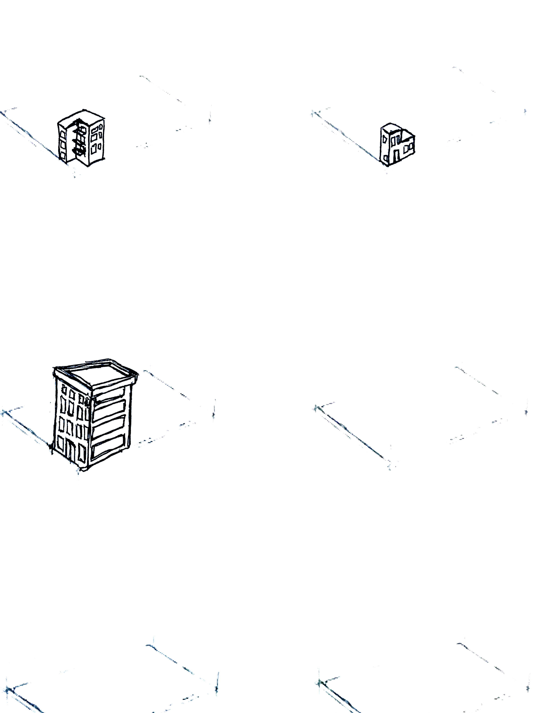
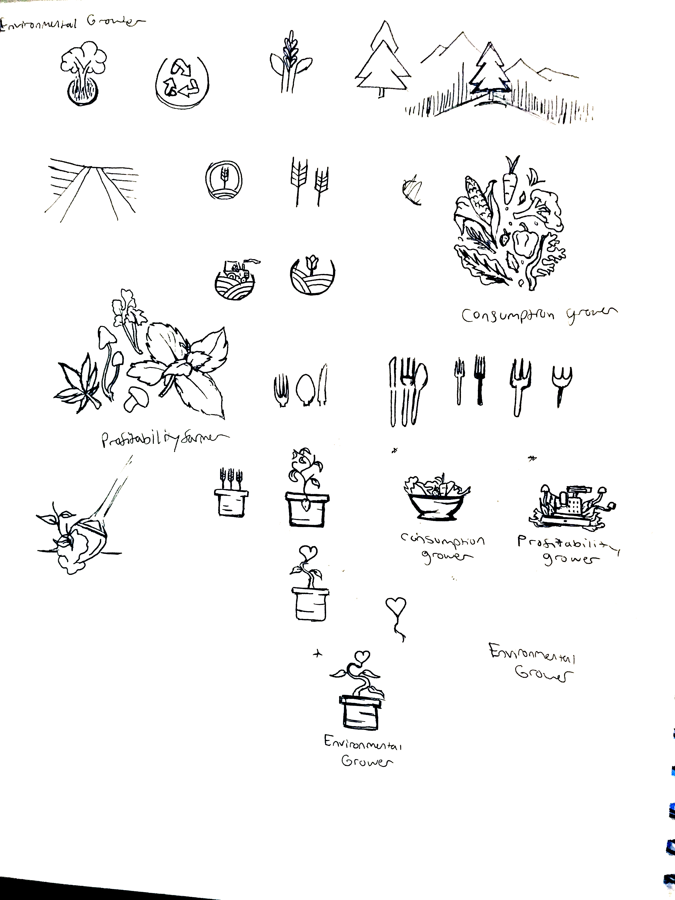
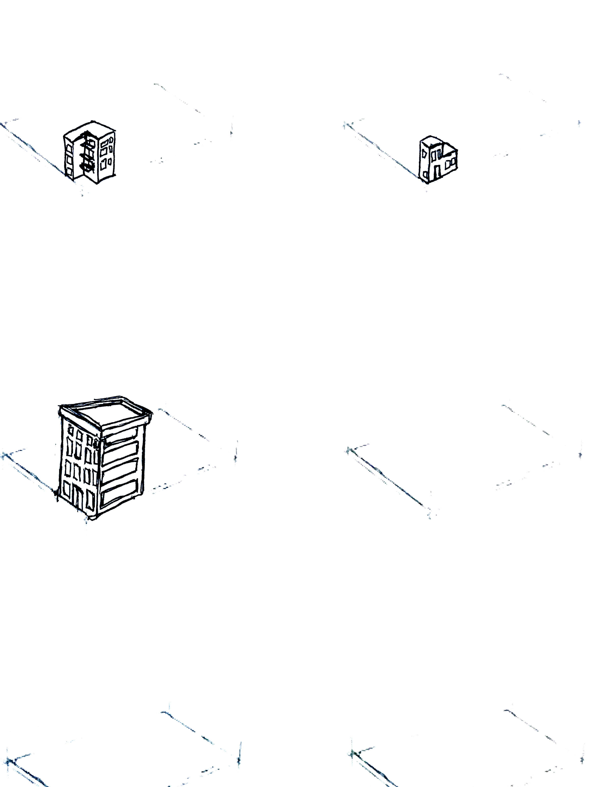
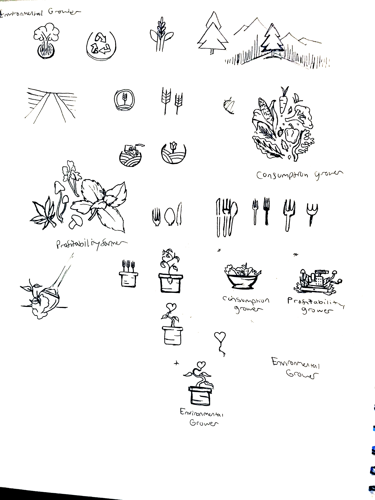
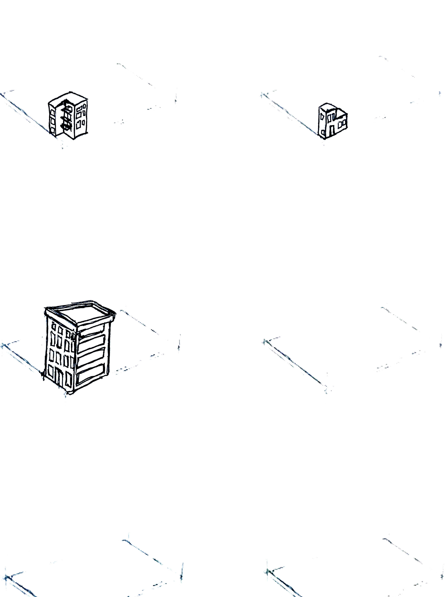
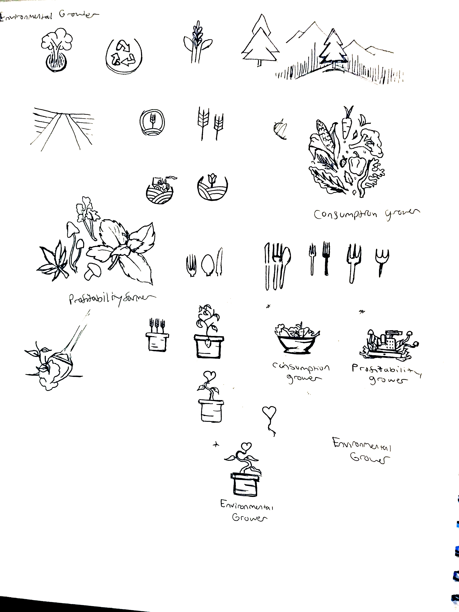

Illustrated Studies
Research & Notes

 



Herban is an interactive web experience built to raise awareness, educate & excite visitors about the personal and environmental benefits of urban vertical farming through the journey of customizing their own virtual micro-farm.




As an introduction to the topic, upon entering the website, visitors will have the opportunity to explore an isometric map view of current and future growing practices to lay the foundational context for the rest of the experience. Once visitors have spent some time with the map they will be prompted to start designing their own urban farm.
In stage 1 of the garden builder, visitors are provided with categories relating to a millennial’s growing priorities, their current living spaces, and the systems in which to grow. In three simple steps a user will have made enough choices to get their results. However, after finishing stage 1, visitors will have the opportunity to customize the impact of their farm on their environment by fine tuning each of the previous selections they had made.
Using algorithms I created that account for: whole-sale produce cost, produce weight, water consumption statistics, and square footage of a green space as it relates to Co2 emission reduction, I was able to calculate relevant environmental benefits that can be fine-tuned by users.
The community is where visitors can see other farms created through the experience (even find their own) as a way to spatially understand the potential total impact of sustainable farming on our future. Once the user has finished exploring the community they can either share the experience on social media or go back to the introduction page.